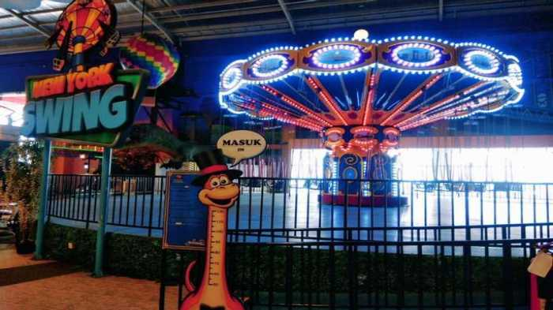
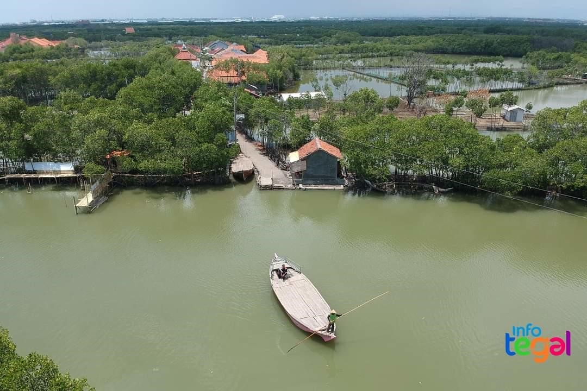
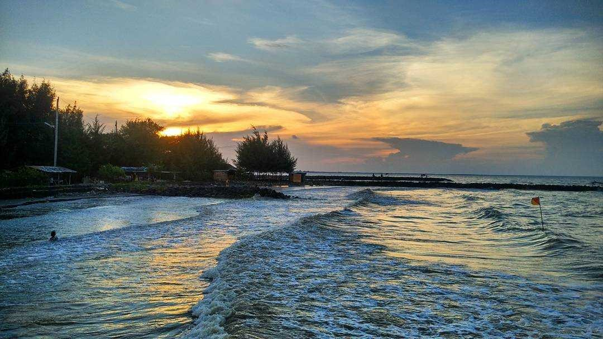
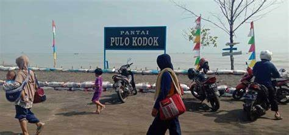
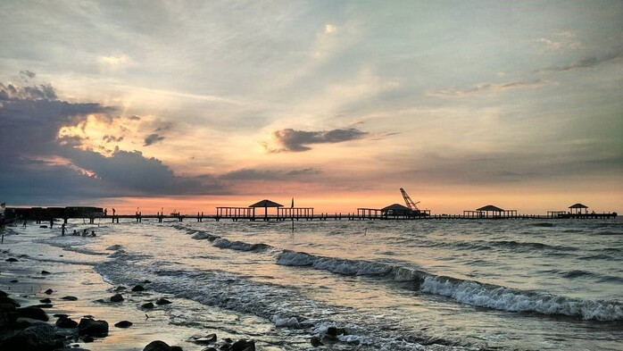
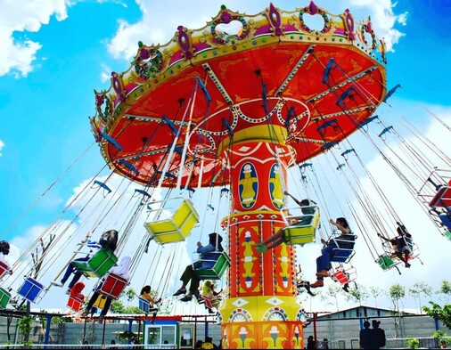
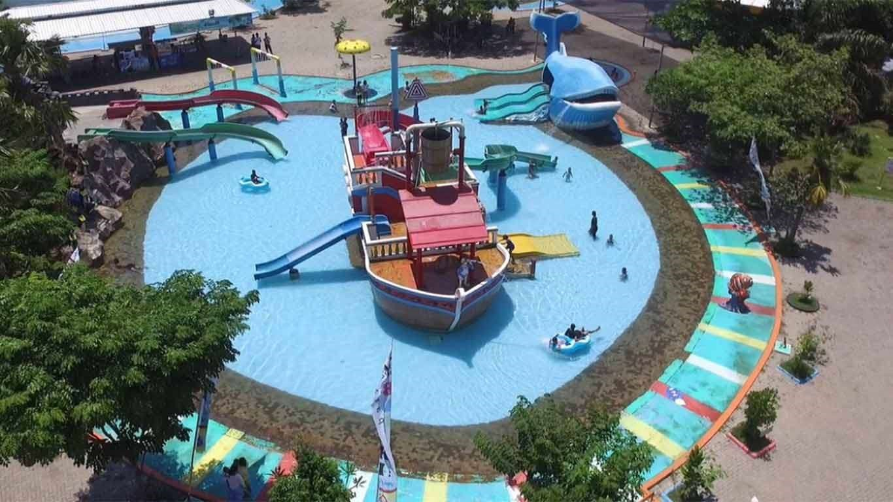

KULINER KOTA TEGAL
Kota Tegal selain kaya dengan keindahan alamnya juga kaya akan cita rasa kulinernya. Simak dibawah ini daftar kuliner khas Kota Tegal

TRANS STUDIO MINI
Selengkapnya

DUKUH KAJONGAN
Selengkapnya

PANTAI MUARAREJA INDAH
Selengkapnya

PANTAI PULAU KODOK
Selengkapnya

PANTAI ALAM INDAH
Selengkapnya

RITA PARK TEGAL
Selengkapnya

BAHARI WATER PARK
Selengkapnya